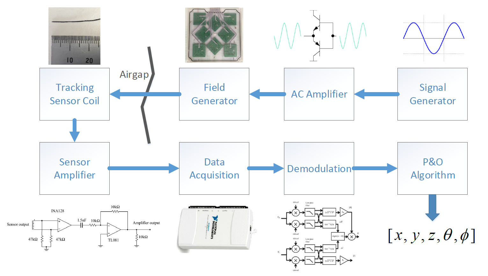

Design Overview¶
Anser EMT is an open-source electromagnetic navigation platform for research use. The system can be readily build from the design files provided in this project. This page provides a brief summary of the system design. Detailed implementation details can be found in the wiki.
The Anser system is comprised of eight systems:
A signal generator
An AC amplifier
A field generator
A tracking sensor coil
A sensor amplifier
A data acquisition unit
A signal demodulator
A position and orientation algorithm
The architecture of the system is shown below
{kind=link}
Signal Generator This provides the source signal for the emitter coils of the field generator. Eight individual waveform generators ICs produce a set of sinusoidal signals in to 20kHz band for amplification.
AC Amplifier A closed loop AC amplifier increases the power gain of the generated sinusoidal signals. This power gain allows the signal to drive the eight emitter coils to produce a time-varying magnetic field.
Field Generator The time-varying magnetic fields are produced by the eight emitter coils in the field generator. A machined plastic case holds each emitter coil in a precisely known position. A Duplo baseboard is fixed to the field generator for calibration.
Tracking Sensor This coil produces a time-varying voltage signal when placed in the working volume of the field generator. The signal is a superposition of voltages induced by the time-varying magnetic field from each emitter coil.
Sensor Amplifier The induced sensor voltage is very weak, on the order of microvolts (\(\mu V\)), and requires filtering and amplification before being sampled. This instrumentation amplifier circuit conditions the signal in preparation for sampling.
Data Acquisition Once conditioned, the tracking sensor is sampled by a data acquisition unit (DAQ). A current sense signal from the emitter coils is also sampled in order to determine the relative phase angle sensor voltage. Anser uses a National Instruments DAQ solution, but alternative/custom solutions may be used instead.
Signal Demodulation The tracked sensor signal and emitter current sense signals are both superpositions of eight frequency components, with each component due to a single emitter coil. Synchronous demodulation in software allows the magnitude and phase of each frequency component to be measured.
Position and Orientation Algorithm The magnitude and phase information of each frequency components is fed into the position and orientation algorithm. The algorithm’s minimisation process yields the position and orientation of the tracking sensor in space as a 5-DOF vector: \(\left[x,y,z,\theta,\varphi\right]\)